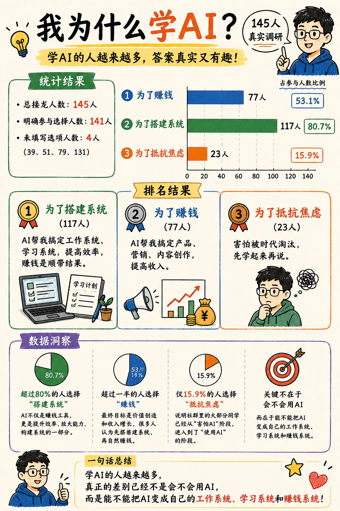
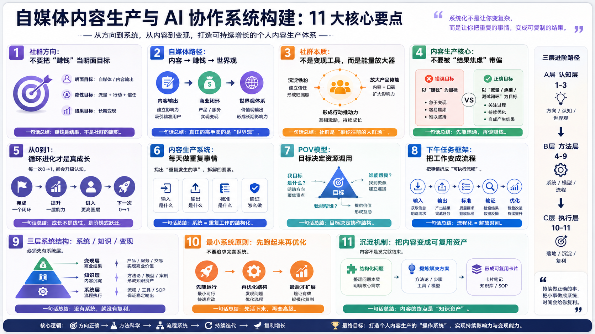

用 AI 干活
单点调用，提高一次任务效率。
这张定位图用来判断你现在在哪一层。目标不是直接跳到资产层，而是先让一个重复任务稳定跑起来。

真正的差别不是会不会用 AI，而是能不能把 AI 变成自己的工作系统、学习系统和赚钱系统。

先看自己在哪一层，再决定下一步升级什么。
单点调用，提高一次任务效率。
任务有步骤，结果能复用。
明确职责，能独立完成一个岗位。
多岗位协作，有审核和回流。
经验、数据、反馈沉淀为复利资产。
根据新 PDF 内容补充：自媒体不是凭感觉输出，而是有输入、有加工、有输出、有验证、有沉淀的小系统。

这张图把社群方向、自媒体路径、内容生产系统、三层架构和沉淀机制放在一起，适合作为这一节的总览图。
先找自己的问题，再看别人的问题。素材不是越多越好，而是要能指向一个真实卡点。
AI 负责框架、拆解和初稿；人负责情绪、审美、真实感和最终判断。
短视频、朋友圈、社群、公众号可以一鱼多吃，但每个渠道的标准不同。
内容发出去才开始验证。没有反馈也是反馈，每次都要留下问题卡和解决方案卡。
不要一上来做万能模块。先让每个 Skill 只承担一个清楚职责，输入、输出和打回规则都要明确。
course-material-digest把课程资料、PDF、图片整理成主题摘要。
business-task-diagnosis选出最值得自动化的靶心任务。
workflow-sop-builder把模糊想法写成 AI 可执行 SOP。
content-angle-selector从素材中选出最值得发布的角度。
multi-channel-adapter把一个观点改写成不同渠道版本。
review-quality-gate审核事实、结构、风格和是否跑题。
feedback-asset-archive把反馈沉淀成问题卡、方法卡、素材卡。
roi-workflow-review复盘系统是否真的节省时间或产生收益。
不要同时做多个系统。本周只做：把一次线下学习内容，转成一套可复用的内容生产工作流。

先诊断，再写 SOP，再实现，最后用 ROI 证明它是不是资产。

任务频率、输入输出、标准、审核、省下时间后的再分配，是每次自动化前都要过一遍的检查项。
只选一个：线下学习内容复利工作流。
课程资料、图片、PDF、评论、自己的感受。
网站、短视频、朋友圈、公众号、知识卡片。
每一步写清输入、输出、合格标准和打回规则。
先设计职责，不急着全部实现。
至少产出一条短视频脚本、一条朋友圈和一张知识卡。
只选一个最值得升级的环节，进入下一周。
写清业务梳理表，跑通一条内容，沉淀一张卡片。
这些书不要求马上读完，作为后续搭建工作流、内容系统和知识资产时的参考坐标。
Tiago Forte。理解如何把资料、项目、领域和归档分层，适合补“沉淀端”。
Donella Meadows。帮助理解反馈回路、延迟和系统杠杆点。
James Clear。系统大于目标，适合把每日内容生产变成稳定动作。
Eric Ries。用最小闭环验证假设，而不是等完美再发布。
Ries 与 Trout。补“不要被赚钱裹挟”的表达定位和心智占位。
Eric Jorgenson。理解杠杆、复利和判断力，适合校准个人商业系统。
李善友等相关创作者研究。补内容、社群、信任和产品承接的连接方式。
Stephen Covey。把目标、角色和行动顺序拉齐，避免系统跑偏。